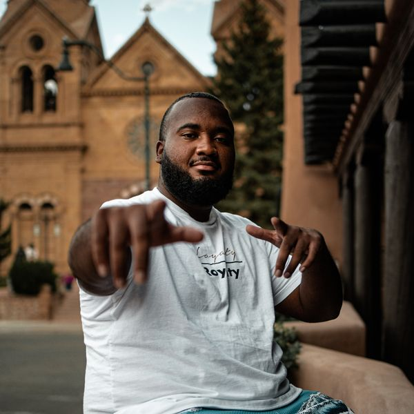

Billy Homer, 26
Born: Littleton, Colorado
Billy has had a basketball in his hands since before first grade and played all the way through his junior year of high school, plus years of AAU ball that took him on the road to compete. Getting cut his senior year didn’t end his love for the game. It fueled it, and he kept playing intramurals in college. He also grew up playing football, baseball, and soccer, so he knows what it takes to build a complete athlete. Growing up coached by his dad is a big part of where his passion comes from, and two years into coaching, he’s paying it forward with Desert Storm, a Farmington AAU travel team, helping every kid he trains get better one rep at a time.